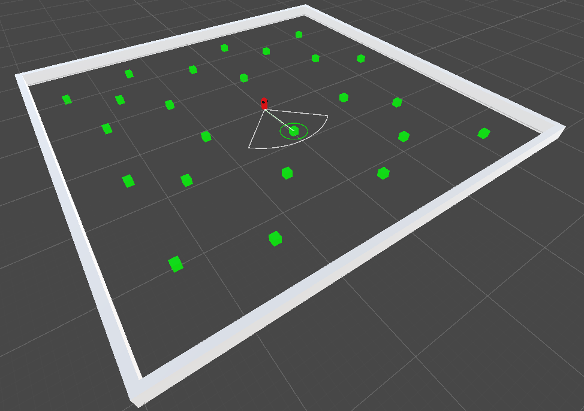

Samples and Exercises
Samples provide quick learning resources for Kaiju Agents, and exercises provide an easy way to build your skills with Kaiju Agents. To access samples and exercises, from the top menu, go to Window > Package Management > Package Manager, go to the In Project tab, select Kaiju Agents, and click on Samples. From there, click the Import button next to the sample or exercise you want. Note that for all samples and exercises, you must first import the Materials sample.
Samples
Materials
The Materials sample simply contains materials used throughout the other samples and exercises. If materials appear pink, from the top menu, go to Window > Rendering > Render Pipeline Converter, choose Built-in to URP or Built-in to HDRP, select all materials, click Initialize Converters, and lastly click Convert Assets.
Movement
This sample provides multiple scenes to demonstrate movements. There are scenes for:
- Comparing seek and pursue.
- Comparing flee and evade.
- Demonstrating wandering.
- Demonstrating sepration.
- Demonstrating obstacle avoidance.
- Demonstrating path following.
Keyboard
This sample provides a scene with an agent that can be controlled with a keyboard. To control the agent, use WASD or the arrow keys to move, and Q and E to turn. Hold space to make the agent move relative to its current heading.
Box Destroyer
This provides a sample scene of an agent which is tasked with destroying "boxes". The agent demonstrates the use of an everything vision sensor and an everything attack actuator being controlled by a controller.

Exercises
Several exercises tailored to help you learn Kaiju Agents or use in an education environment are provided. Each exercise is more complicated than the last, providing an efficient learning experience for Kaiju Agents.
Visual Decisions
Open Rescue Decisions and inspect the agent as its state machine calls planners, a Utility selector and a behavior tree. With ML-Agents installed the sample executes its identity policy and then a C# pickup action. Without the optional package a C# provider demonstrates the same handoff. Visual decision graphs